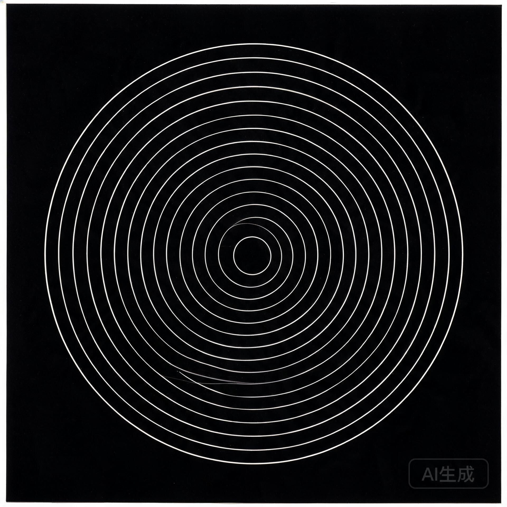

8:00
晚上好
Discover
M
FEATURED ALBUM
Charcoal
Brambles
8 songs · 2012
Play Now

Made for you
See all
Charcoal
Brambles
Nightfall
Loon Bird
Grey Skies
Solitude
Deep Blue
Oceanic
Recently played
See all
Search
Trending
All
Lo-fi
Ambient
Piano
Cinematic
Focus
Album · 8 songs · 2012
Charcoal
Brambles
Play
Shuffle
Top Tracks
Unsayable
Brambles
Home
Search
Library
Hotlist
Now Playing
播放队列
睡眠定时
导入本地音乐
Unsayable
Brambles
词
1:04
2:52
歌曲操作
导入本地音乐
选择 mp3 文件添加到歌单
取消
M
Music Lover
@music_lover
0
歌曲
0
收藏
0
已播放
我的收藏
›
热门榜单
›
设置
›
关闭
编辑资料
头像与手机个人资料同步；更换头像请前往「我的 · 编辑资料」。
昵称
账号（@开头）
头部背景
自定义颜色
取消
保存
播放队列
导入本地音乐
睡眠定时
选择停止播放的时间
关闭
15分钟
30分钟
60分钟
设置
睡眠定时
未开启 ›
自动滚动歌词
开 ›
清除播放历史
›
清除全部数据
›
我的收藏